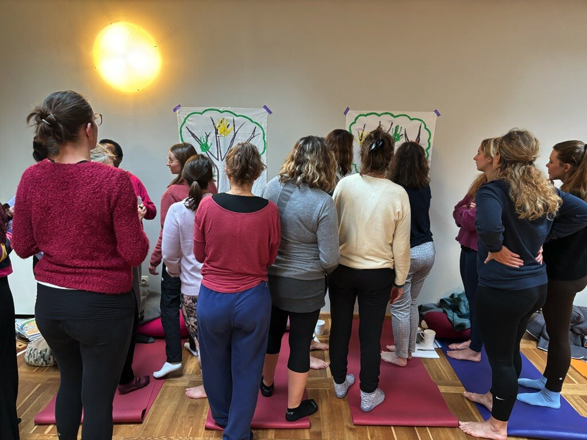
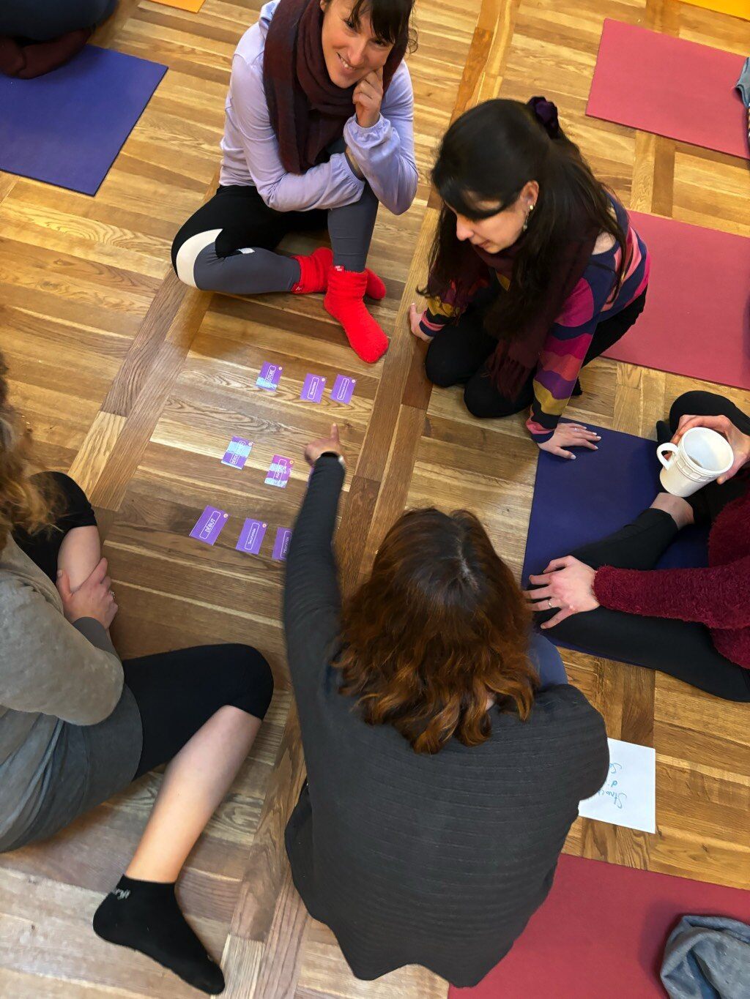
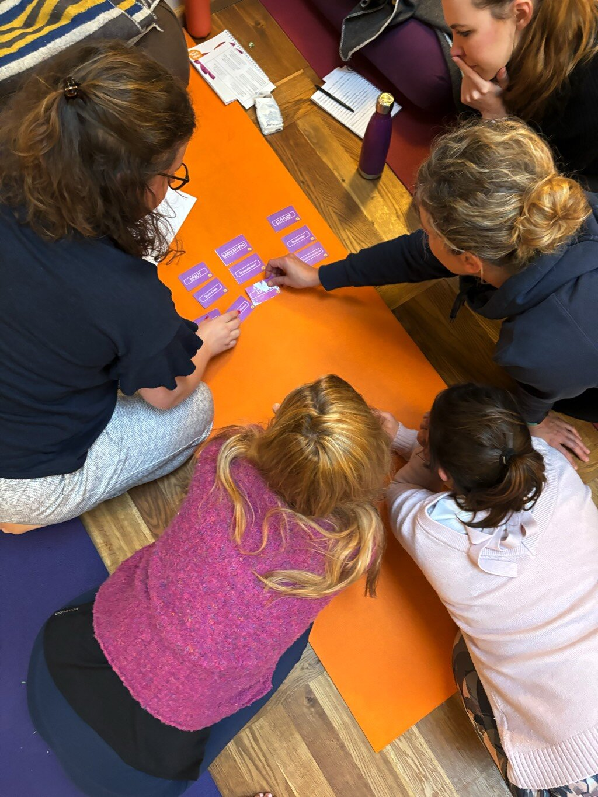
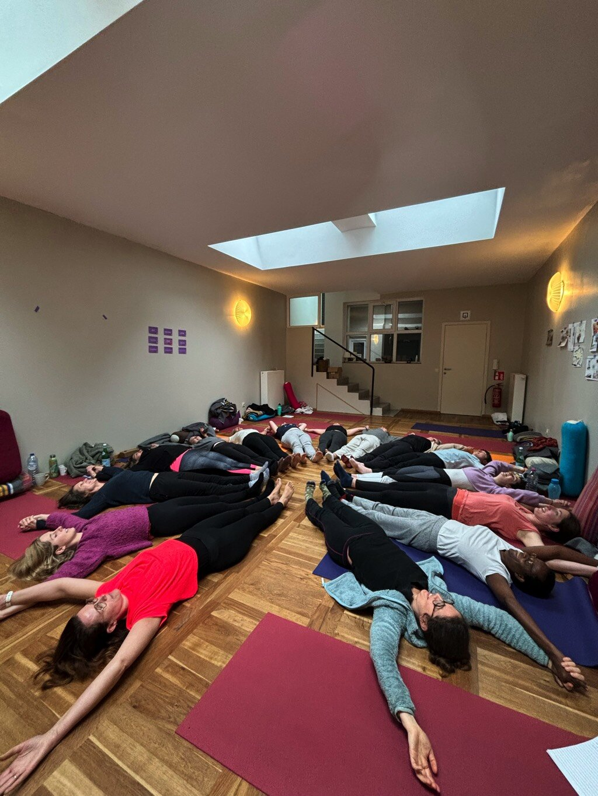
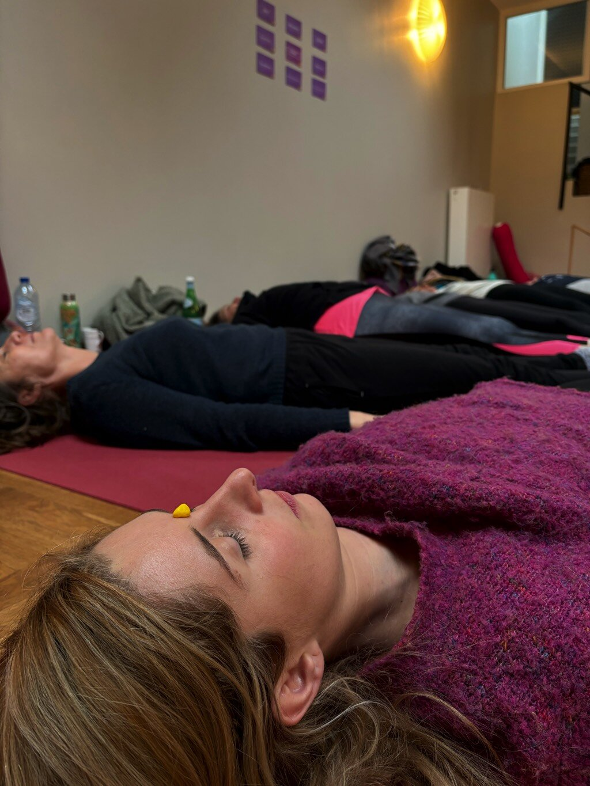
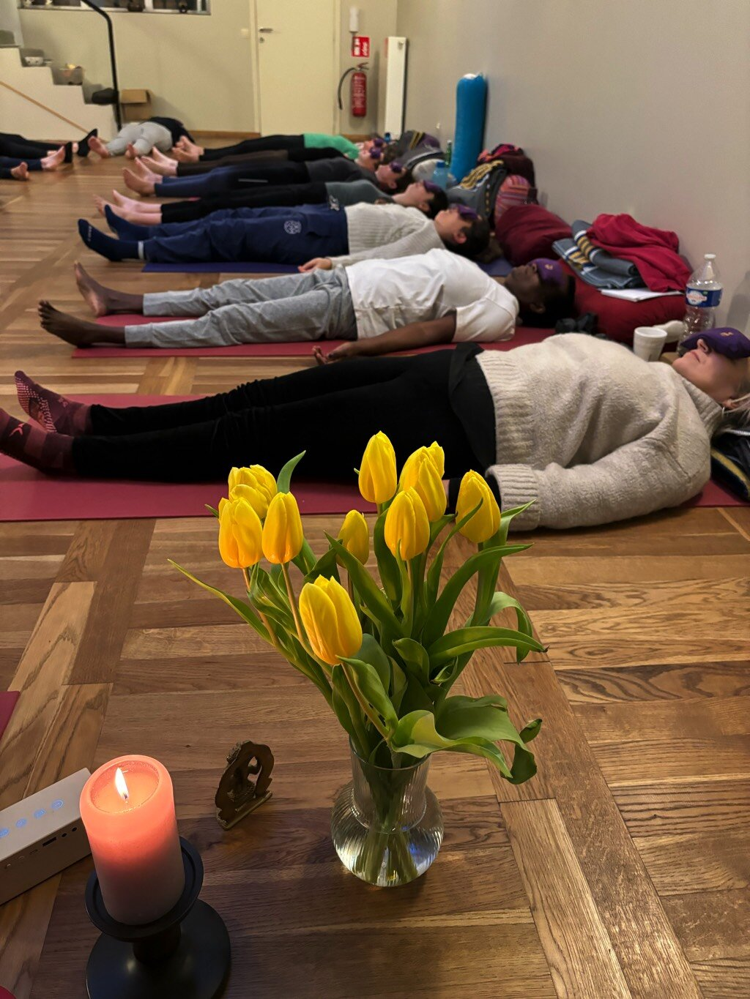
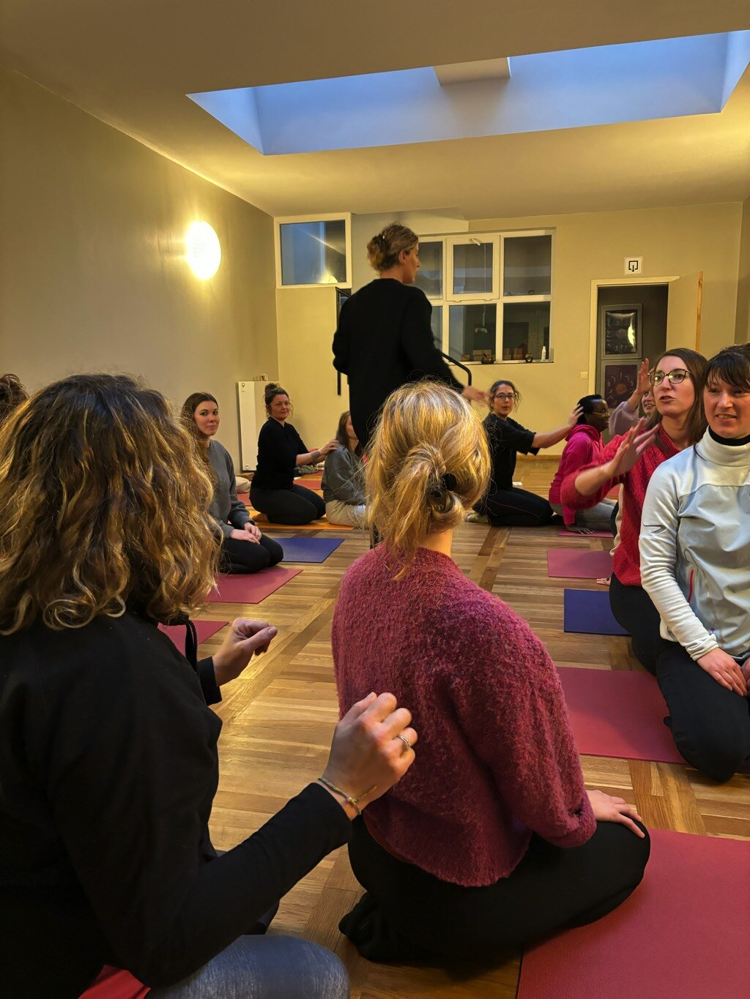
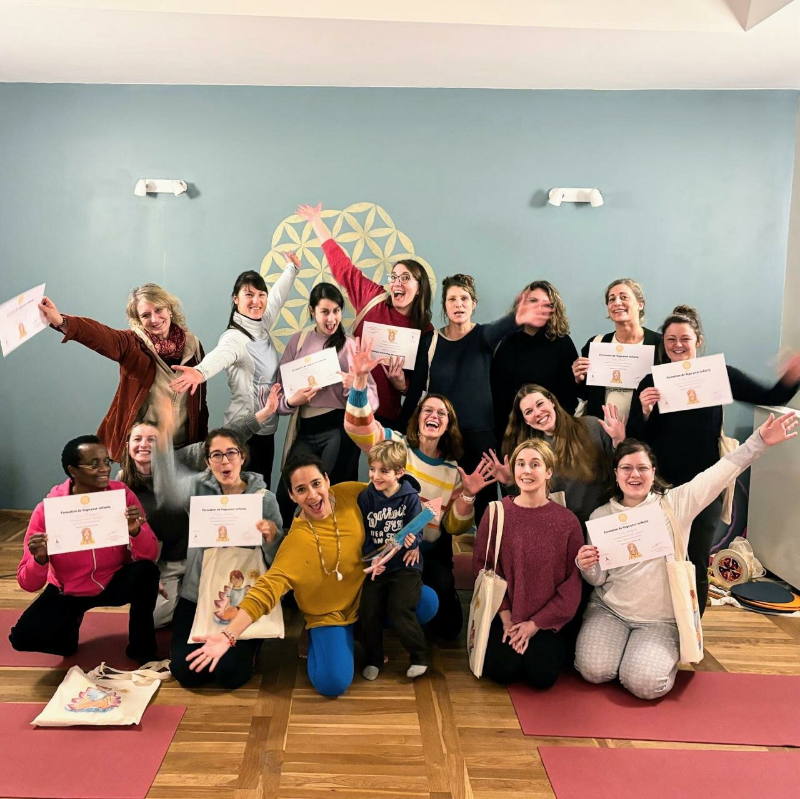

La última formación de yoga para niños organizada en el centro Santosha Schaerbeek fue mucho más que una simple experiencia. Dirigida por Carmen, esta sesión intensiva de 2 días (totalizando 18 horas) dejó una impresión profunda en las participantes, quienes comparten su entusiasmo y desarrollo personal luego de este evento inspirador.



"¡Parece que el yoga ha tomado el control incluso de nuestros sueños!", exclama alegremente una de las participantes. "Motivada e inspirada después de esta maravillosa formación, incluso soñé con yoga la noche pasada", confía con una mirada cómplice.

Los beneficios de esta formación se manifestaron rápidamente en la vida cotidiana de las participantes, especialmente en su relación con sus hijos. Una participante comparte: "Tenía mantras en mi cabeza. Mis hijas me pidieron hacerlos juntas y jugamos a la memoria en familia. ¡Fue tan lindo ese momento de compartir!"

El entusiasmo es palpable entre las participantes, como lo demuestra otra: "¡Jaja, totalmente igual! Enmarqué mi certificado, imprimí el plan de estudios y el bingo + las emociones y todo plastificado. ¡Leí una meditación para dormir bien también! A los niños les encantó. Estoy tan motivada que esta mañana hice espacio en la oficina. Tiré TODAS mis viejas clases de ciencias que enseñaba y mis clases de la universidad de física y química. ¡Espacio para el yoga y la animación natural!!!!!"

Esta formación claramente dejó una marca profunda en las participantes, inspirándolas a transformar su entorno para integrar mejor las enseñanzas del yoga en su vida cotidiana y compartir esta práctica con sus seres queridos, especialmente con sus hijos.

Esperando nuevas aventuras y aprendizajes, estas nuevas yoguinis están listas para abrazar su camino con serenidad y determinación, guiadas por las enseñanzas recibidas en el centro Santosha Schaerbeek.
La práctica del yoga para niños no se limita a posturas físicas, sino que se convierte en una verdadera filosofía de vida, promoviendo el bienestar, la conexión con uno mismo y con los demás, y la armonía en todas las dimensiones de la existencia.
Que esta experiencia enriquecedora continúe inspirando y irradiando en los corazones y hogares de quienes tuvieron la oportunidad de participar, y que el yoga para niños siga floreciendo en la comunidad de Bruselas y más allá.
¿También quieres vivir una experiencia transformadora con el yoga para niños? Únete a nosotros en nuestras próximas formaciones de yoga para niños que tendrán lugar los fines de semana en Chile, México y España.
Inscríbete ahora en nuestro sitio.
Si no puedes participar en persona, nuestra formación en línea de yoga para niños te ofrece la oportunidad de aprender a tu propio ritmo. Descúbrelo hoy en nuestra plataforma en línea.